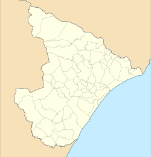

Minha primeira tabela
População de Sergipe
| 1 | Aracaju | 602 757 |
| 2 |  Nossa Senhora do Socorro Nossa Senhora do Socorro | 192 330 |
| 3 | Itabaiana | 103 439 |
| 4 | Lagarto | 101 579 |
| 5 | São Cristóvão | 95 612 |
| 6 | Estância | 65 078 |
| 7 | Tobias Barreto | 50 905 |
| 8 | Simão Dias | 42 578 |
| 9 | Barra dos Coqueiros | 41 511 |
| 10 | Nossa Senhora da Glória | 41 202 |

Sergipe é dividido em 75 municípios.